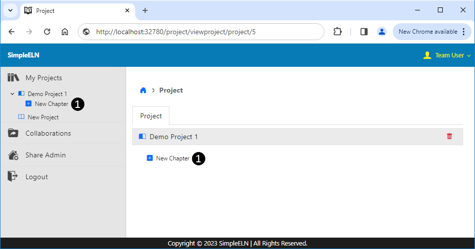
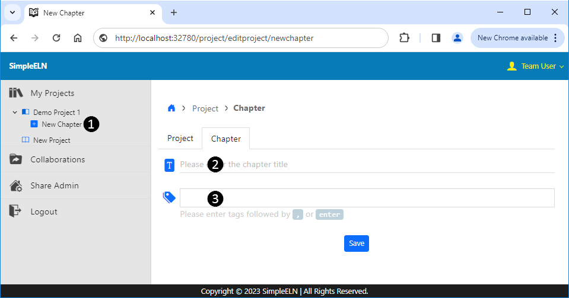
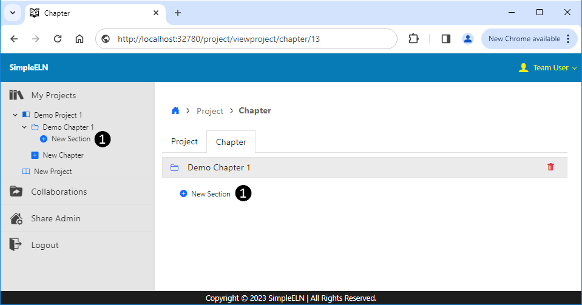
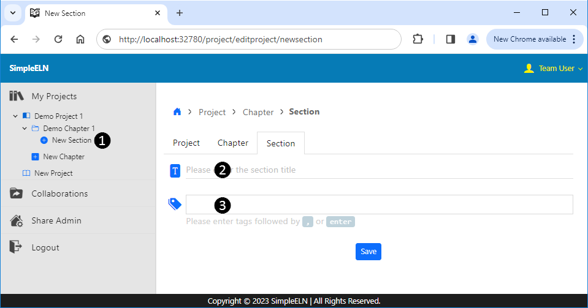
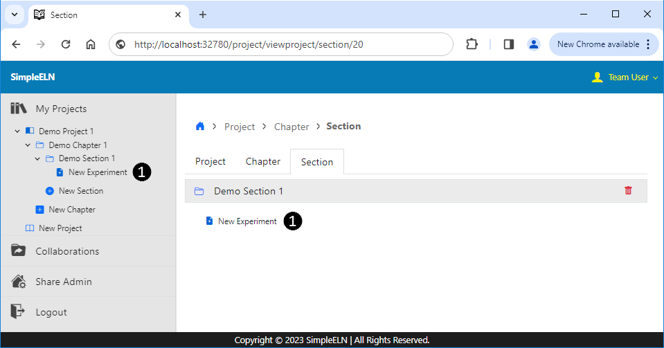
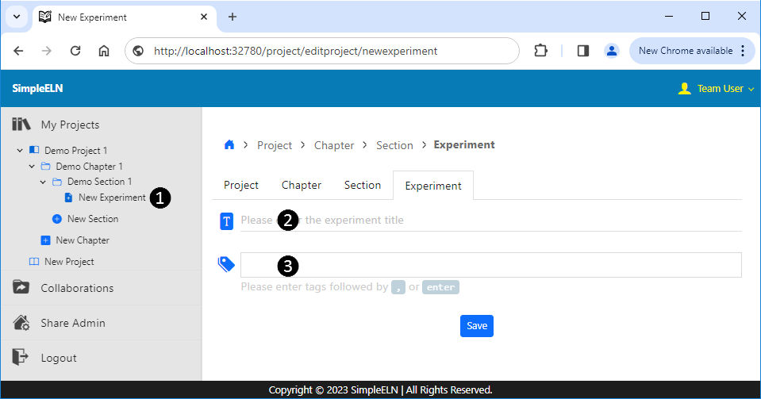
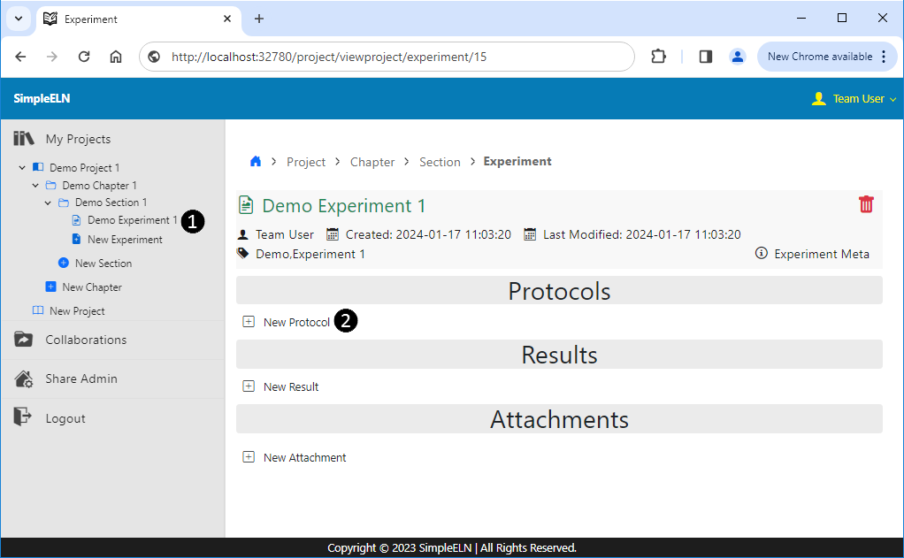
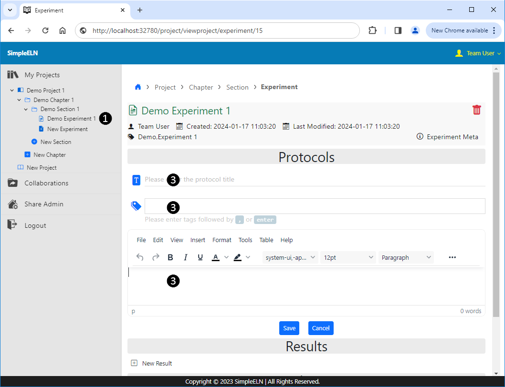
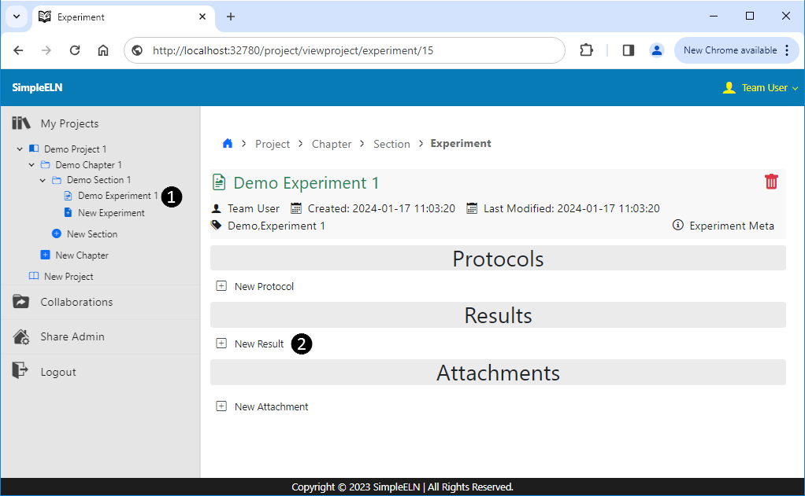
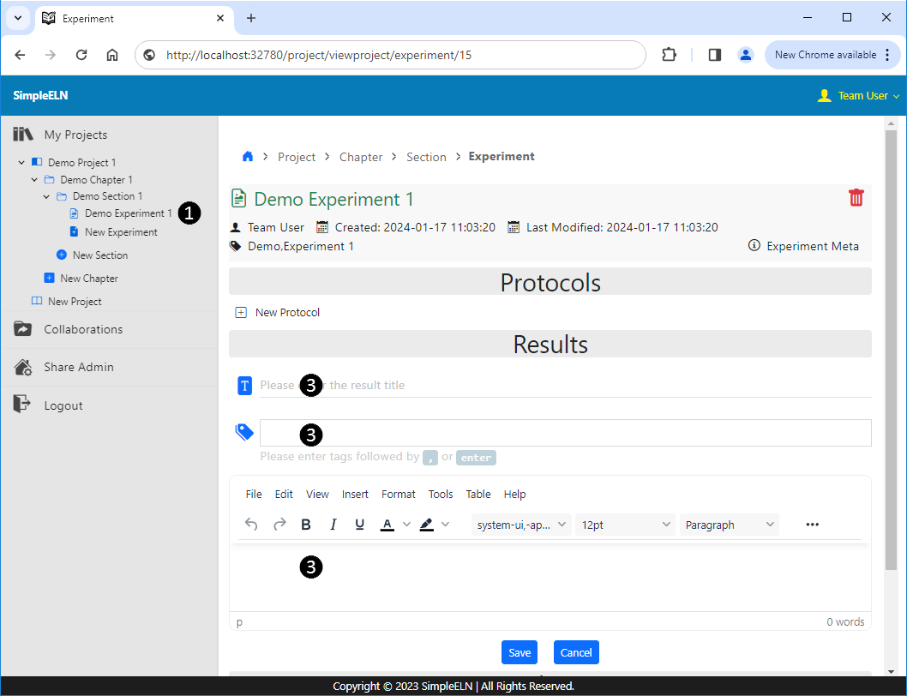

1.3. Notebook Creation
Each notebook (project) encompasses non-modifiable experimental data and modifiable annotation data as per requirements, presenting a structured approach to organizing experimental data and annotations. This facilitates collaboration and sharing among researchers, ensures data integrity and traceability, and provides efficient search capabilities.
1.3.1. Create Notebook Structure
A four-tier hierarchical annotation system is established for each notebook (project), with levels labeled as Project, Chapter, Section, and Experiment. These levels can be dynamically adjusted with detailed logs to ensure the traceability of the annotation data. Classifying and annotating experimental data is a crucial step in scientific research. It involves organizing and labeling the data to make it easier to understand, analyze, and share with others. This will facilitate effective collaboration with others and enhance the reproducibility of your research findings.
- Create New Project
Navigate to the Project page http://<host_ip>:<port>/project, making sure to replace <host_ip> with the IP address of your host server machine and <port> with the designated port number.
From the left navigation panel, click on
 New Project to redirect to the Create New Project page.
New Project to redirect to the Create New Project page.Complete and submit the form.
- Create New Chapter/Section/Experiment
From the left navigation panel, click on the corresponding New Chapter/New Section/New Experiment link.
Complete and submit the form.
1.3.1.1. Create New Project
From the left navigation panel, click on
Option 1: From the left navigation panel, select
My Projects
Option 2: From the left navigation panel, select
Collaborations User Name
Enter a meaningful sentence as the Notebook Title (Project Title).
Enter meaningful keywords as the Project Tags.
Complete and submit the form.
Please refer to the reference Create New Project for detailed step-by-step instructions on how to create a new project.
1.3.1.2. Create New Chapter
From the left or main navigation panel, click on New Chapter to redirect to the Create New Chapter page.
Option 1: From the left navigation panel, select
Project Title New Chapter in sequence.
Option 2: From the left navigation panel, select
Option 3: Under the Project view, select New Chapter entry from the main panel.
Enter a meaningful sentence as the Chapter Title.
Enter meaningful keywords as the Chapter Tags.
Complete and submit the form.
Please refer to the reference Create New Chapter for detailed step-by-step instructions on how to create a new chapter.
1.3.1.3. Create New Section
From the left or main navigation panel, click on New Section to redirect to the Create New Section page.
Option 1: From the left navigation panel, select
Chapter Title New Section in sequence.
Option 2: From the left navigation panel, select
Option 3: Under the Project Chapter view, select the Chapter tab and New Section entry from the main panel.
Enter a meaningful sentence as the Section Title.
Enter meaningful keywords as the Section Tags.
Complete and submit the form.
Please refer to the reference Create New Section for detailed step-by-step instructions on how to create a new section.
1.3.1.4. Create New Experiment
From the left or main navigation panel, click on New Experiment to redirect to the Create New Experiment page.
Option 1: From the left navigation panel, select
Option 2: From the left navigation panel, select
Option 3: Under the Project Chapter Section view, select the Section tab and New Experiment entry from the main panel.
Enter a meaningful sentence as the Experiment Title.
Enter meaningful keywords as the Experiment Tags.
Complete and submit the form.
Please refer to the reference Create New Experiment for detailed step-by-step instructions on how to create a new experiment.
1.3.2. Enter Experimental Data
The experiment serves as the repository for recording experimental data, forming a fundamental and relatively self-contained objective unit that aids in the organization of the entire project. Each experiment is presented as a standalone webpage, which is further divided into three distinct parts: Protocols, Results, and Attachments. The Protocols provide a comprehensive overview of the experimental procedures and considerations, the Results encapsulate the specific data and observations obtained from the experiment, and the Attachments may include relevant images, charts, or other media as supplementary data. Once these data are entered, they are immutable, although additional information can be appended to each part as needed.
1.3.2.1. Create New Protocol
From the left navigation panel, click on
Experiment Title to redirect to the experiment details page.
Option 1: From the left navigation panel, select
Option 2: From the left navigation panel, select
Option 3: Under the Project Chapter Section view, select the Section tab and
Click on the New Protocol link located in the Protocols section.
Complete the Title, Tags, and Content form fields.
Submit the form.
Please refer to the reference Create New Protocol for detailed step-by-step instructions on how to create a new protocol.
1.3.2.2. Create New Result
From the left navigation panel, click on
Option 1: From the left navigation panel, select
Option 2: From the left navigation panel, select
Option 3: Under the Project Chapter Section view, select the Section tab and
Click on the New Result link located in the Results section.
Complete the Title, Tags, and Content form fields.
Submit the form.
Please refer to the reference Create New Result for detailed step-by-step instructions on how to create a new result.
1.3.2.3. Create New Attachment
From the left navigation panel, click on
Option 1: From the left navigation panel, select
Option 2: From the left navigation panel, select
Option 3: Under the Project Chapter Section view, select the Section tab and
Click on the New Attachment link located in the Attachments section.
Select the file and click the Upload button.
Please refer to the reference Create New Attachment for detailed step-by-step instructions on how to create a new attachment.
Screenshots
1.3.3. Screenshots of Creating a Demo Notebook
The following are some screenshots demonstrating the process of creating a typical project.
1.3.3.1. Create New Project
{kind=link}
1.3.3.2. Create New Chapter
Create New Chapter
From the left or main navigation panel, click on New Chapter to redirect to the Create New Chapter page. ❶
Enter a meaningful sentence as the Chapter Title. ❷
Enter meaningful keywords as the Chapter Tags. ❸
Complete and submit the form.
 Fig. 1.7 Create New Chapter
 Fig. 1.8 Create New Chapter
{kind=link}
{kind=link}
1.3.3.3. Create New Section
Create New Section
From the left or main navigation panel, click on New Section to redirect to the Create New Section page. ❶
Enter a meaningful sentence as the Section Title. ❷
Enter meaningful keywords as the Section Tags. ❸
Complete and submit the form.
 Fig. 1.9 Create New Section
 Fig. 1.10 Create New Section
{kind=link}
{kind=link}
1.3.3.4. Create New Experiment
Create New Experiment
From the left or main navigation panel, click on New Experiment to redirect to the Create New Experiment page. ❶
Enter a meaningful sentence as the Experiment Title. ❷
Enter meaningful keywords as the Experiment Tags. ❸
Complete and submit the form.
 Fig. 1.11 Create New Experiment
 Fig. 1.12 Create New Experiment
{kind=link}
{kind=link}
1.3.3.5. Create New Protocol
Create New Protocol
From the left navigation panel, click on the experiment title to redirect to the corresponding experiment details page. ❶
Click on the New Protocol link located in the Protocols section. ❷
Complete the Title, Tags, and Content form fields. ❸
Submit the form.
 Fig. 1.13 Create New Protocol
 Fig. 1.14 Create New Protocol
{kind=link}
{kind=link}
1.3.3.6. Create New Result
Create New Result
From the left navigation panel, click on the experiment title to redirect to the corresponding experiment details page. ❶
Click on the New Result link located in the Results section. ❷
Complete the Title, Tags, and Content form fields. ❸
Submit the form.
 Fig. 1.15 Create New Result
 Fig. 1.16 Create New Result
{kind=link}
{kind=link}
{kind=link}
{kind=link}
{kind=link}